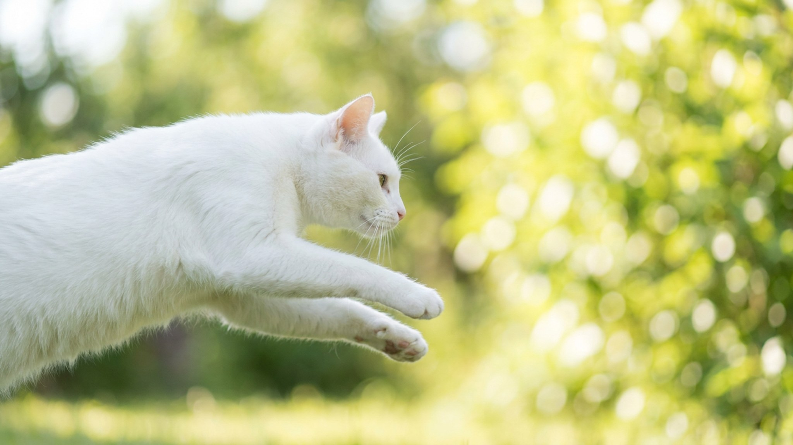

Белоснежная кошка с голубыми глазами часто расплачивается за красоту слухом — так работает ген белого окраса. Форин уайт вывели, чтобы обойти эту ловушку: чисто белая шубка, зелёные глаза и нормальный слух. А за внешностью аристократки прячется темперамент ориентала — шумный, ласковый и деятельный. Разбираем характер, уход и что проверить у котёнка.
🐾 Ваш питомец — форин уайт?
Заведите профиль в AnimaLife: приложение запомнит породу, возраст и вес и будет подсказывать по уходу именно для неё. Вопросы AI-ветеринару — круглосуточно и бесплатно.
Завести профиль → Завести в MAX →
У вас iPhone? AnimaLife есть в App Store
Форин уайт — это, по сути, ориентальная кошка чисто белого окраса, выведенная в Британии в 1960-х. Заводчики намеренно закрепляли белый цвет без голубых глаз: у многих голубоглазых белых кошек ген окраса связан с врождённой глухотой. Скрещивая белых кошек с сиамскими и ориентальными линиями, они получили животное с белоснежной шерстью, зелёными глазами и полноценным слухом. Порода и сегодня остаётся редкой.
Внешность — единственное, что в форин уайт «прохладного». Темперамент — типично ориентальный:
Это кошка для тех, кто хочет постоянного диалога, а не независимого соседа по квартире.
Шерсть короткая, без плотного подшёрстка — ухода немного, но у белого окраса своя специфика:
Форин уайт — кошка-компаньон в полном смысле слова. Она хорошо ладит с детьми, если те умеют играть без грубости, и обычно принимает других кошек и даже дружелюбных собак — при спокойном, постепенном знакомстве. Одиночество переносит плохо: если вас часто нет дома, ей нужен либо второй питомец, либо насыщенная среда с игрушками, полками и головоломками. Эта порода не для тех, кому нужна тихая мебель, зато идеальна для тех, кто хочет активного, разговорчивого и очень привязанного друга.
Даже при «неглухой» селекции слух стоит проверить: заводчик должен подтвердить, что котёнок реагирует на звук, а по желанию — предоставить результат проверки слуха. Спросите документы и происхождение (ориентальные и сиамские линии), посмотрите на условия и социализацию. Ориенталы, выросшие в контакте с людьми, становятся уравновешенными «болтунами», а не пугливыми. Выбирайте активного, любопытного котёнка, который сам идёт на контакт.
Материал носит информационный характер и не заменяет очную консультацию ветеринара.
🐾 У вас форин уайт?
AnimaLife соберёт уход под породу: к каким болезням есть склонность, что проверять по возрасту, чем кормить и когда пора к врачу. Бесплатно, прямо в мессенджере.
Собрать план ухода → Собрать в MAX →
У вас iPhone? AnimaLife есть в App Store
🐾 Понравился разбор?
Подпишитесь на канал — каждый день разбираем по одному тревожному симптому у кошек и собак: что в пределах нормы, а когда пора к врачу. Подпишитесь, чтобы не пропустить разбор, который может спасти здоровье вашего питомца.